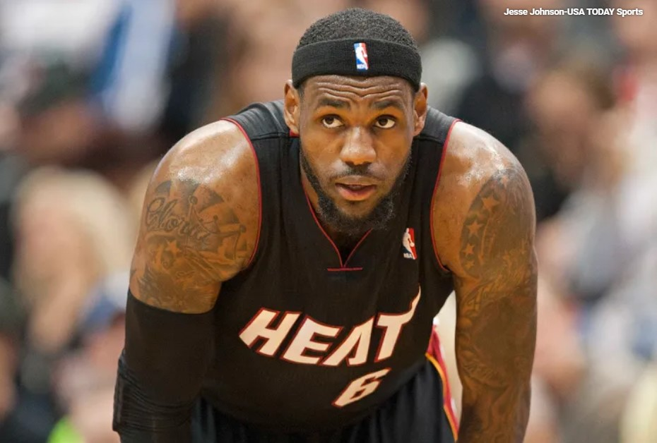
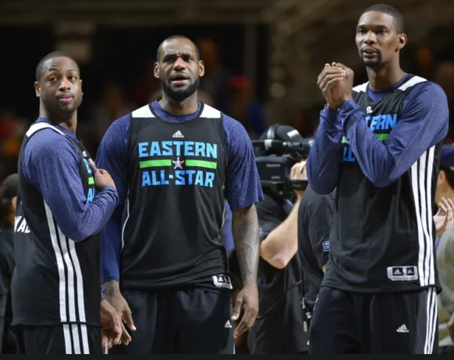
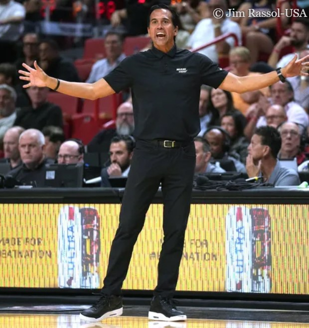
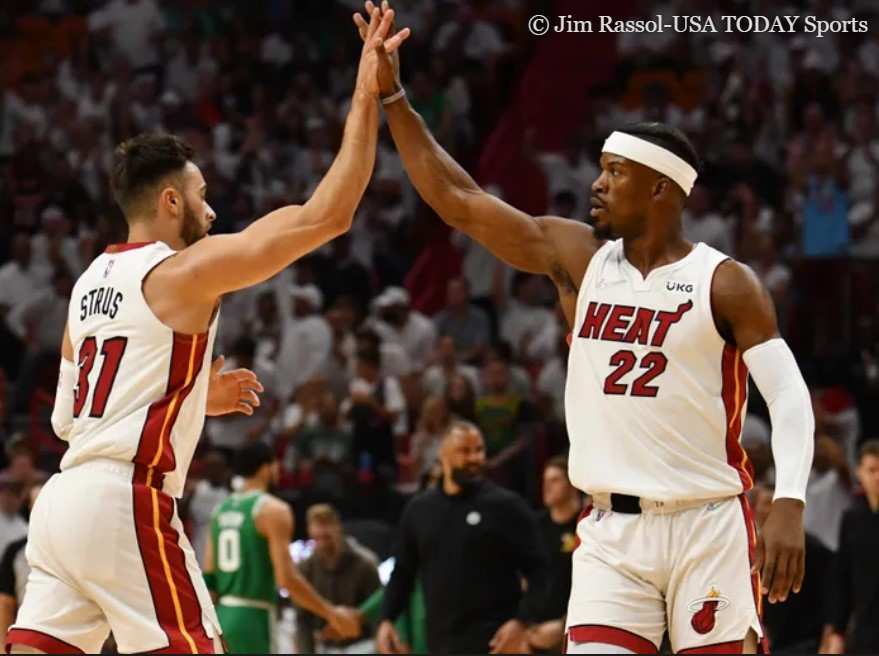
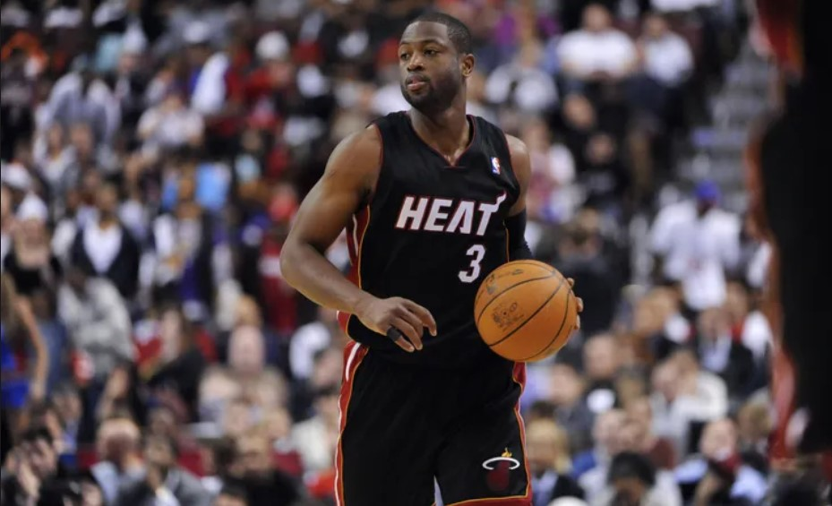

1. LeBron James Has Record For Most Points In A Single Game

The Miami Heat signing LeBron James was their most successful move in franchise history. Most fans view James’ peak as his Miami run in his prime years with a lot of talent around him for the first time in his NBA career.
There was a belief that LeBron was a better passer than scorer since he loved to fill the stat sheet across the board over just scoring. James proved he could score with the best them as well with a 61-point effort setting the Heat franchise record for most points in a single game.
2. Pat Riley Poured His Championship Rings On Table To Recruit Big Three

The President role of Pat Riley running the Miami Heat franchise has seen him as one of the most respected people in the NBA. Riley was an iconic coach and solid player before he moved into the management side of things.
The 2010 offseason coup convincing LeBron James, Dwyane Wade and Chris Bosh to all unite on team was his crowning moment. Bosh revealed a wild story of Riley emptying a bag of championship rings on the table during their meeting to show what could come from aligning with him.
3. Erik Spoelstra Is Currently Second Longest Tenured Coach In NBA

One of the reasons why the Miami Heat franchise is so respected today is the credibility of head coach Erik Spoelstra. Pat Riley replaced himself with Spoelstra in the late 2000s right before the big move of forming the big three in 2010.
There were rumors of LeBron James trying to get Spoelstra fired early in the run, but Riley refused. Spoelstra having the full support of Riley led to two NBA Championships and the second-longest tenured coaching stint in the league. Miami hired Spoelstra in April of 2008 and he’s only second to Gregg Popovich for longest active run.
4. Jimmy Butler Had Historic Success In 2020 NBA Finals Loss

The Miami Heat signing Jimmy Butler in the summer of 2019 immediately paid off when they made the NBA Finals one season later. Butler led the role players of the Heat all the way to the 2020 NBA Finals in the bubble before falling short to the Los Angeles Lakers.
The series saw Butler having an all-time great effort despite not winning the ring. Butler became the second player ever to lead his team in points, rebounds, assists, steals and blocks in an NBA Finals series. LeBron James was the only other name to accomplish that back in 2016.
5. Dwyane Wade Has More Than Double The Points Of Second Leading Franchise Scorer

There is little debating Dwyane Wade as the greatest Miami Heat in franchise history. LeBron James during his four years and even Alonzo Mourning for a short while may have been “better” players, but Wade did the most for the Heat franchise.
It comes as no surprise that Wade is the Miami leading all-time scorer with 21,556 points for the franchise. However, the surprise does come when realizing the second-best name has less than half that as Alonzo Mourning scored 9,459 points for the Heat.